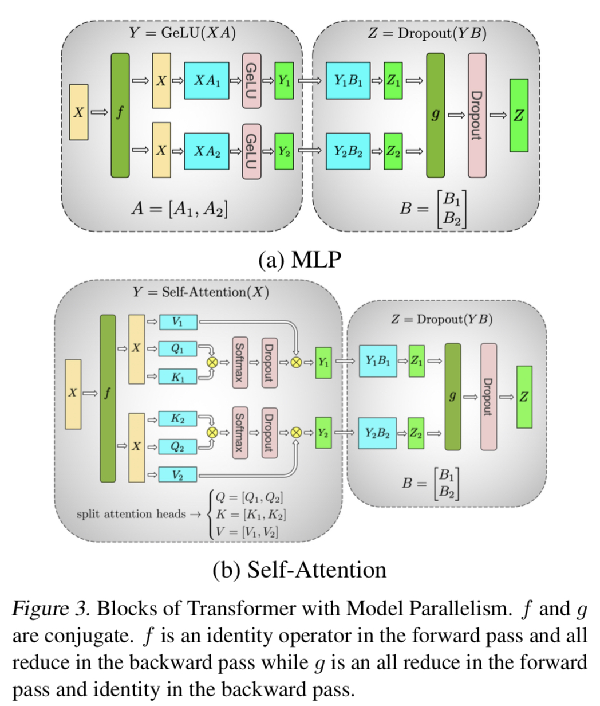

1D parallel algorithm (same as Megatron-LM)#
Authors: Kichang Yang, Kevin Ko, Minho Ryu

Tensor parallelism is a technique that partitions model weights across multiple devices to reduce memory load. 1D tensor parallelism splits each layer of a model into smaller chunks along one dimension and distributes them among different devices. For example, a linear layer Y = XA can be split into column-parallel or row-parallel fashion. Column-parallel splits A into [A1 A2] and computes Y_i = XA_i on each device. Row-parallel splits B into [B1; \;B2] and computes Z = [Y1\;Y2][B1; \;B2] using an all-reduce operation. Megatron-LM uses 1D tensor parallelism to train large-scale language models with billions of parameters on GPU clusters.
Usage#
Use ParallelMode.TENSOR_1D as a parameter of tensor_parallel_mode. Model weight should be divisible by tp_size.
# model = defined in section 2.2
from oslo import ParallelContext, ParallelMode
from oslo.torch.nn.parallel import TensorParallel
tp_size = 4
tp_depth = 1
parallel_context = ParallelContext.from_torch(
data_parallel_size=1,
pipeline_parallel_size=1,
tensor_parallel_size=tp_size,
tensor_parallel_mode=ParallelMode.TENSOR_1D,
)
model = TensorParallel(model, parallel_context)
oslo.ready(model, parallel_context)